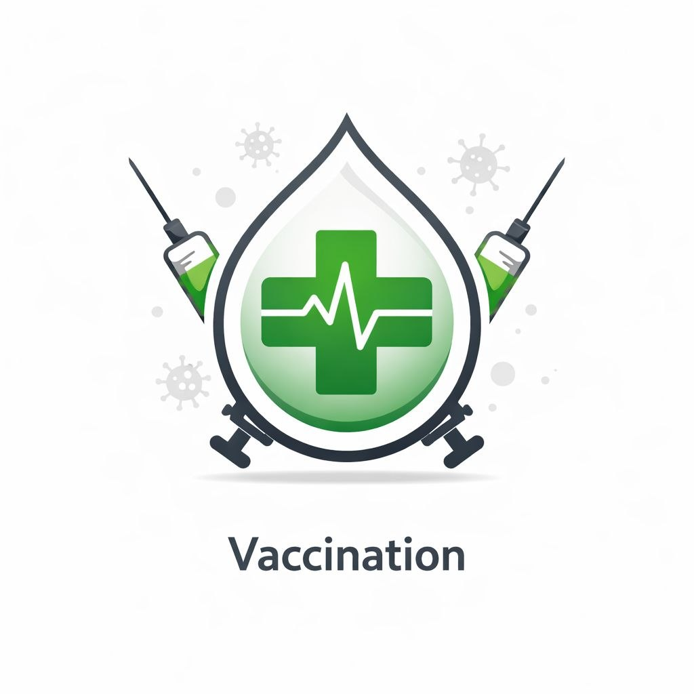

Apportez votre carnet
Présentez votre carnet de vaccination au centre de santé afin que l’équipe puisse vérifier les doses déjà reçues et vous orienter.
Les vaccins aident à protéger les personnes et leur communauté contre certaines maladies. Un professionnel de santé peut vous conseiller selon votre âge, votre situation et votre carnet de vaccination.
Contacter CongoVital
Présentez votre carnet de vaccination au centre de santé afin que l’équipe puisse vérifier les doses déjà reçues et vous orienter.
Les recommandations varient selon les personnes. Adressez-vous à un professionnel de santé pour connaître les vaccins adaptés à votre situation.
Se renseigner sur la vaccination contribue à la protection individuelle et collective, notamment pour les personnes les plus vulnérables.
Demandez conseil à un centre de santé ou contactez notre équipe pour être orienté vers les bonnes ressources.
Nous contacter